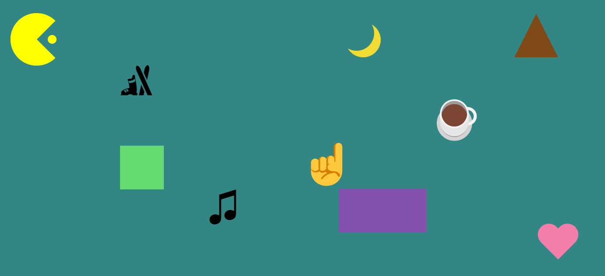

Week 5
Advanced CSS II, Animations
Agenda
- Review Homework and Issues
- No Quiz :)
- Questions?
- Positioning
- IDs
- Fancy Shapes
- Animations
- Questions?
- Class Time To Work
Fixed, Absolute, and Relative Positioning
Up to this point all of our elements have just been drawn from the beginning to the end and in that order. However, we can change where elements are drawn even if the code is written in a different place.
This is done by changing the position property in css.
Have you noticed that the nav at the very top of this web page stays fixed to the top of the browser window even when we scroll down?
This is accomplished by setting the value of position to fixed. It is possible that other elements will still be shown in front of it so we also need to change the z-index property which is resposible for layering elements.
Fixed conted is positioned relative to the web browser window.
.fixed {
position: fixed;
z-index: 9999;
}
If we wanted our content to be positioned relative to the full web page (which may extend beyond the edge of the web browser window) and as opposed to where it's supposed to be drawn based on where we wrote HTML... (look in the top left corner)
then we set the position to absolute
.absolute {
position: absolute;
top: 70px;
left: 0px;
}
You'll notice the above style has a new property called top and left. You can add these to offset the element. I added them because the example was not correctly being positioned so I had to set the value of top to be 70px from the top and left 0px from the left.
Lastly, if we just want to slightly offset content from where it would be normally drawn, or rather relative to the position it's supposed to be drawn then we set the position to relative.
An issue you can see is that I've injected some CSS just on the word relative, however the . has not shifted as well. When you move elements with left and top, the white space does not become usable and is treated as if the element was not offset.
.relative {
position: relative;
left: -50px;
}
Floating Elements
Another thing we can do to easily put elements into a row is to use the float property;
As we see here, we have 2 <h4> tags on the same line. The one on the left looks like a column and this one fills up the remainder of the space. What the float property does is force the empty space of an element to be available and allow other elements to occupy that space even if they would normally be forced onto a new line. This is a conveninent solution as opposed to creating 2 divs and putting the content in each div. Look what happens though as this text keeps growing. It starts to wrap around the unused space of the other element. This creates an interesting effect and can be useful for writing articles.
There is one caveat. Once you apply the float property to an element everything after it will attempt to "float" into that unused space.
This could actually make the rest of the page look broken and to fix this you need to use the "clear" property at some point to make the rest of your content appear as intended.
<h4 style="float: left; width: 200px">
Another thing we can do to easily put elements into a row is to use the float property;
</h4>
<h4>
As we see here, we have 2 <h4> tags on the same line. The one on the left looks like a column and this one fills up the remainder of the space. What the float property does is force the empty space of an element to be available and allow other elements to occupy that space even if they would normally be forced onto a new line. This is a conveninent solution as opposed to creating 2 divs and putting the content in each div. Look what happens though as this text keeps growing. It starts to wrap around the unused space of the other element. This creates an interesting effect and can be useful for writing articles.
<br>
<br>
There is one caveat. Once you apply the float property to an element everything after it will attempt to "float" into that unused space.
<br>
<br>
This could actually make the rest of the page look broken and to fix this you need to use the "clear" property at some point to make the rest of your content appear as intended.
</h4>
<br style="clear: left">
When you float content the content will be pushed as far left or right as possible depending on if you set the float value to be left or right.
Positioning Demo
The Flexbox
Another way we can put our content in a row is by using a flexbox.
The flexbox will fit everything as best as it can based on the width of the container and push content onto the next line if it does not fit.
Resize the browser window to witness how the colored boxes below change their arrangement.
<div style="display: flex; flex-wrap: wrap;">
<div style="background-color: aqua; width: 128px; height: 128px;"></div>
<div style="background-color:azure ; width: 128px; height: 128px;"></div>
<div style="background-color: aqua; width: 128px; height: 128px;"></div>
<div style="background-color:azure ; width: 128px; height: 128px;"></div>
<div style="background-color: aqua; width: 128px; height: 128px;"></div>
<div style="background-color:azure ; width: 128px; height: 128px;"></div>
<div style="background-color: aqua; width: 128px; height: 128px;"></div>
<div style="background-color:azure ; width: 128px; height: 128px;"></div>
<div style="background-color: aqua; width: 128px; height: 128px;"></div>
<div style="background-color:azure ; width: 128px; height: 128px;"></div>
<div style="background-color: aqua; width: 128px; height: 128px;"></div>
<div style="background-color:azure ; width: 128px; height: 128px;"></div>
<div style="background-color: aqua; width: 128px; height: 128px;"></div>
<div style="background-color:azure ; width: 128px; height: 128px;"></div>
</div>
By not setting display to flex each <div> would be pushed to the next line. You could use any of the methods we talked about prior such as changing the display to inline however, this flex setting is meant to solve having to use Block, Inline, Tables, and Positional values by making a solution that solves everything.
See the below example of the <div> without a flex display
IDs
Warning, the following content is not advised to be used. It is purely for your knowledge so you know it exists in the event you encounter it. It is old, outdated, and classes are far superior.
Back in the day css classes did not exist. Instead you had to use IDs in your stylesheet which looks like this.
Declare a # followed by the name and the rest is the same as you currently do with classes.
#cadetblue-text {
color: cadetblue;
}
Applying the style is easy. Just use the id attribute and pass in the name of the id of the styles.
<h4 id="cadetblue-text">
Applying the style was easy. Just use the id attribute and pass in the name of the id of the styles.
</h4>
The main disadvantage is that you cannot mix and match different sets of styles. If you want 1 set of styles that adds a white border and another set of styles that make the font italicized you could only pick 1. With classes you can add both of them but you could not do something like this
<h4 id="white-border italicized">
Applying the style was easy. Just use the id attribute and pass in the name of the id of the styles.
</h4>
You would need to make an entirely new set of styles that combines them all in your css and reference that in the id attribute. It was very tedious and time consuming.
Currently you can specify both an id and classes in your HTML elements. The id styles will take priority over the class styles so if there is a property being set in both the id and class such as font-size, then the id will be what is used.
Classes vs IDs Demo
Fancy Shapes
CSS can do more than just stylize content, you can draw with it too (although this can be quite a challenge)
There are several resources to help you out with this, but for the most part these shapes are created by playing with the borders and some offsets such as filling in the entire div background as white and then forcing the border to be transparent and bringig in towards the center to create the illusion of a shape being drawn.
border radius
simple shapes
complex shapes
Animations
You can also use CSS to make your content do interesting things such as move elements around the web page over time or change their settings altogether.
<div class="animation-class"></div>
@keyframes animation {
0% {
background-color: red;
left: 0px;
top: 0px;
}
25% {
background-color: yellow;
left: 200px;
top: 0px;
}
50% {
background-color: blue;
left: 200px;
top: 200px;
}
75% {
background-color: green;
left: 0px;
top: 200px;
}
100% {
background-color: red;
left: 0px;
top: 0px;
}
}
.animation-class {
width: 100px;
height: 100px;
background-color: red;
position: relative;
animation-name: animation;
animation-duration: 4s;
animation-iteration-count: infinite;
}
Using the @keyframes keyword in our CSS we can create an animation and specify the state at different times throughout the lifetime of the animation.
We reference the animation we created in the CSS class and specify how long it lasts. We can also define how many times it should run which in the above case I specified infinite.
You can play with positional offsets to the element move around the web page.
Take a look at the following links to help you get a better understanding.
Transitions
Keyframes
2D transforms
3D transforms
Try and apply the :hover modifier to your CSS to only play the animation when the cursor is over the element!
Assignment 5
For this week's assignment you will be making a 10 interactable shapes.

Additionally, add a new web page link to your homepage.
Readings Due Next Week
Chapter 15 HTML & CSS Jon Duckett